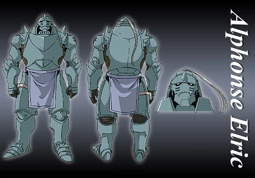

Alphonse Elric

A Alma Blindada
Alphonse Elric é o irmão mais novo de Edward Elric. Após uma tentativa fracassada de ressuscitar sua mãe através da alquimia, sua alma foi vinculada a uma armadura por seu irmão, sacrificando seu braço direito no processo. Apesar de sua aparência intimidadora, Alphonse mantém um coração gentil e uma personalidade doce.
Características:
- Idade: 14 anos
- Altura: 2,10m (na forma de armadura)
- Especialidade: Alquimia com círculo de transmutação
- Condição: Alma vinculada a uma armadura
- Habilidades: Força sobre-humana e incapacidade de sentir dor